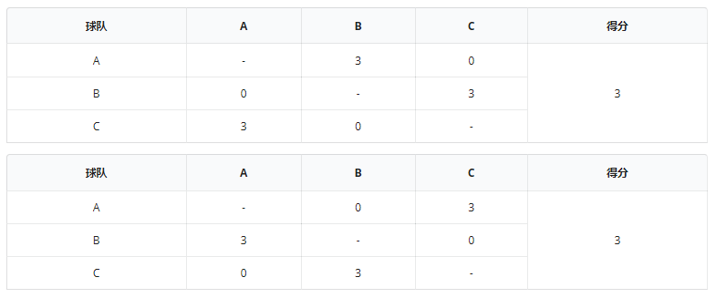

沫沫非常喜欢看足球赛，但因为沉迷于射箭游戏，错过了最近的一次足球联赛。此次联赛共 $N$ 支球队参加，比赛规则如下：
- 每两支球队之间踢一场比赛。
- 若平局，两支球队各得 $1$ 分。
- 否则胜利的球队得 $3$ 分，败者不得分。
尽管非常遗憾没有观赏到精彩的比赛，但沫沫通过新闻知道了每只球队的最后总得分，然后聪明的她想计算出有多少种可能的比赛过程。
譬如有 $3$ 支球队，每支球队最后均积 $3$ 分，那么有两种可能的情况：

 Comet OJ
Comet OJ